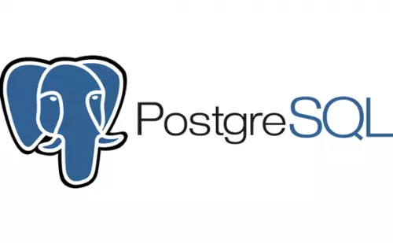
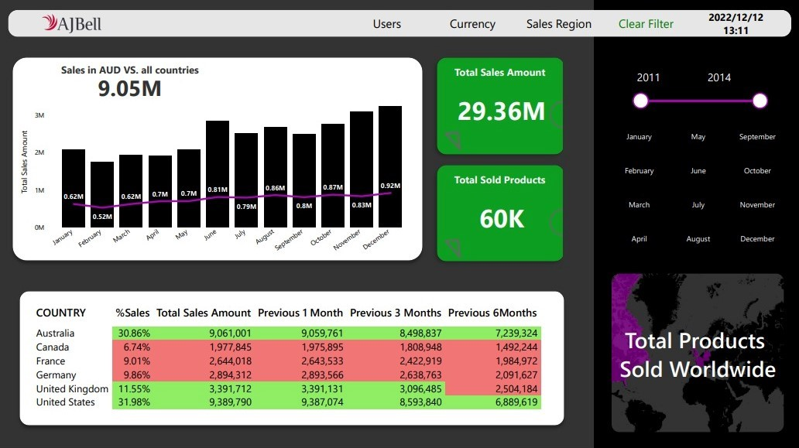
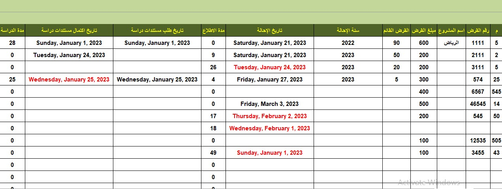

In this project data of services provided is cleaned and analysed using Excel, visualized
using Power BI
so you can quickly assess the overall health of a support area
with an overview of all incidents, problems, and requests. With key metrics such as
year-over-year trends, requests status, paid by region.
DAX measures is used to create robust and high-performance data models.

Analyzing a collected inforamtion of 100k medical appointments in Brazil and focusing on the
question of whether or not patients show up for their appointment and what is the relation
between them showing up and other data provided.

Exploring data in PostgreSQL using Data Manipulation Language.
Performing multiple sets of queries as part of a task of ITI internship.

Visualizing sales data of AJBell company over past four years demonstrating the
performance of the company over supported area.

Report and dashboard for HR management with key metrics such as seperations, actives by
region, average
tenure - months, actives by ethinic group.
Power Query is used for data modelling.

Tables for following up with investment cases is created using excel formulas and conditional
formatting.
Two dashboards are created to demonstrate overall performance of the office.

Explore data related to bike share systems for three major cities in the United
States—Chicago, New York City, and Washington. Write code to import the data and
answer interesting questions about it by computing descriptive statistics. Also
write a script that takes in raw input to create an interactive experience in the terminal
to present these statistics.